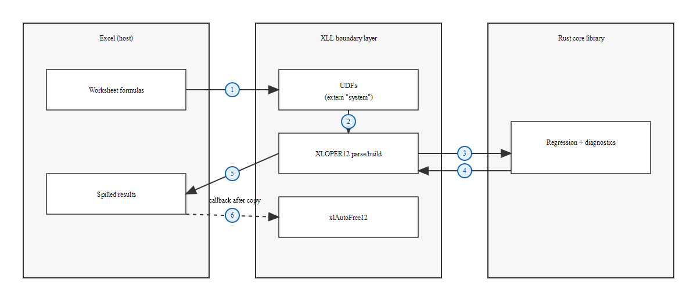

From DLL to XLL: Building an Excel Add-in in Pure Rust
Skip VBA and call Rust from Excel formulas by building a pure‑Rust XLL add‑in. This article shows how XLLs work, how to bridge Excel’s XLOPER12 types, and how to ship 27 UDFs without the SDK.
Table of Contents
1. Introduction
The previous article ended with a working system: a Rust DLL callable from Excel VBA. Three lines of code to run an OLS regression, a few more to paste the results into a sheet. It works. But “it works” is not the same as “someone will use it.”
I have written scientific code that failed to get adopted. One project had an interface so ugly that nobody touched it. Another eventually gained traction, but only after I went back and made it user-friendly. The lesson I took away was simple and painful: think about other people using your code, not just yourself. Document the tooling. Do not assume that the variable names are second nature to anyone but you.
That lesson is what made me look at the VBA approach with honest eyes. The DLL itself is solid. But the delivery mechanism has friction. Even with the high-level VBA wrappers (where a user calls LinReg_OLS and gets a 2D array back), they still need to import a .bas module into their workbook and wire up a Workbook_Open event to call LR_Init. Under the hood, the wrapper is allocating VBA arrays, calling VarPtr() to pass raw pointers across the FFI boundary, checking a handle for zero, calling getter functions to extract results, and freeing the handle. If a user needs to go beyond the wrappers or debug a problem, they are face-to-face with all of that machinery.
I was debating how viable this actually was for a fellow engineer to pick up and use. The person I had in mind is a mechanical engineer who runs regressions but has only ever touched Excel, has no idea what you are talking about when you mention elastic net, ridge, lasso, or the LINE conditions for linear regression. For that person, the VBA approach is not viable. Not because it is broken, but because the distance between “open a workbook” and “get a regression output” is too large. They are not going to import a .bas module. They are not going to debug a Workbook_Open event that did not fire.
The question I kept coming back to: what if Excel could call Rust directly? No VBA, no macros, no handles, no Declare PtrSafe Function. Just a formula in a cell:
=LINREG.OLS(A1:A20, B1:E20)Type it, press Enter, and a formatted coefficient table spills into the adjacent cells. Coefficients, standard errors, t-statistics, p-values, R-squared, F-statistic. Recalculates automatically when the data changes.
That is what an XLL is. And you do not need an SDK to build one.
What This XLL Exposes
The add-in registers 27 worksheet UDFs across six categories, all powered by the same Rust core that backs the VBA DLL, the WASM module, and the Python bindings:
Core regression (6 UDFs): OLS, WLS, Ridge, Lasso, Elastic Net, Polynomial
Diagnostics (14 UDFs): Breusch-Pagan, White, Jarque-Bera, Shapiro-Wilk, Anderson-Darling, Harvey-Collier, Rainbow, RESET, Durbin-Watson, Breusch-Godfrey, VIF, Cook’s Distance, DFFITS, DFBETAS
Cross-validation (4 UDFs): K-Fold for OLS, Ridge, Lasso, Elastic Net
Prediction intervals (1 UDF): Point predictions with lower/upper bounds, standard errors, and leverage
Lambda path (1 UDF): Logarithmically-spaced regularization parameter sequence
Utility (1 UDF): Library version
Most formulas follow the same pattern: =LINREG.FUNCTIONNAME(y_range, x_range, ...). The regularized methods (Ridge, Lasso, Elastic Net) and their cross-validation variants require additional parameters like lambda and alpha. A few UDFs diverge further: LINREG.VERSION() takes no arguments, LINREG.WLS adds a weights range, and LINREG.PREDICTIONINTERVALS adds a new-data range. The Function Wizard provides per-argument help text for all of them. Results spill automatically in Excel 365+.
What Is Intentionally Excluded
Not everything in linreg-core maps cleanly to a worksheet formula.
LOESS is excluded because it takes a different input shape: a 1-D x vector rather than the row-major predictor matrix that every other UDF expects. Exposing it would require either a different argument convention (confusing) or silent reshaping (dangerous).
Feature importance (SHAP values, permutation importance, standardized coefficients) involves multi-step workflows: fit a model, then compute importance relative to that fit. Worksheet formulas are stateless; there is no “fit, then query” pattern. These are better served by VBA or Python, where the user can hold a reference to the fitted model.
Serialization (model save/load) does not map to cell formulas at all.
Regularized polynomial variants and regularized prediction intervals are future work. The core implementations exist, but the XLL wrappers have not been written yet. The 27 UDFs cover the use cases that make sense as single-formula operations.
The End Result
Here is the simplest use case. A user with data in columns A through E types this formula in cell G1:
=LINREG.OLS(A1:A20, B1:E20)The result spills automatically:
| Term | Coefficient | Std Error | t Stat | p-Value |
| Intercept | 1.2345 | 0.4567 | 2.7034 | 0.0156 |
| X1 | 0.8901 | 0.1234 | 7.2131 | 0.0000 |
| X2 | -0.3456 | 0.0987 | -3.5015 | 0.0032 |
| X3 | 0.5678 | 0.2345 | 2.4209 | 0.0278 |
| X4 | 0.1234 | 0.1567 | 0.7875 | 0.4425 |
| R-squared | 0.9234 | | | |
| Adj R-squared | 0.9030 | | | |
| F-statistic | 45.2341 | | | |
| F p-value | 0.0000 | | | |
| MSE | 0.3456 | | | |
| RMSE | 0.5879 | | | |No VBA. No macros. No handles. No paste step. Change a cell in the input range and the entire output recalculates.
Getting to that formula required solving problems in Excel’s C API, #[repr(C)] memory layout, runtime callback resolution, and ownership transfer, all in pure Rust, with no external SDK and zero new dependencies. The rest of this article walks through each of those in turn.

2. What Is an XLL?
An XLL is a DLL with a specific set of exported callback functions that Excel knows to look for. You rename the file from .dll to .xll, point Excel at it through the Add-in Manager, and Excel loads it into its own process. From that point on, Excel is the caller and your code is the callee. This is the fundamental inversion from the VBA/DLL approach.
The Inversion of Control
In the VBA article, the control flow was: VBA calls LR_OLS, the DLL does work, VBA retrieves results via getter functions. VBA owned the conversation. It decided when to call, what to pass, and what to do with the output.
With an XLL, Excel owns the conversation. When the add-in loads, Excel calls your xlAutoOpen function and asks: what do you have? You respond by registering your UDFs. From then on, whenever a user types =LINREG.OLS(...) in a cell, Excel calls your exported function directly, passing the cell contents as structured data. Your function computes the result, returns it in Excel’s native format, and Excel displays it. When Excel is done with the returned data, it calls your xlAutoFree12 function to let you clean up.
You do not initiate the conversation. Excel does. (You do call back into Excel for specific tasks like UDF registration, retrieving the DLL path, and freeing Excel-owned memory, but those calls happen through a callback pointer that Excel provides. The distinction matters: you are responding within Excel’s protocol, not driving it.)
Required Exports
Excel recognizes a DLL as an XLL if it exports xlAutoOpen. In practice, a well-behaved XLL exports three functions:
xlAutoOpen is called once when Excel loads the add-in. This is where you register every UDF you want to expose. Registration tells Excel the function’s exported symbol name, what it should be called in the worksheet, what argument types it accepts, what category it belongs to in the Function Wizard, and what help text to display. If xlAutoOpen returns without registering anything, the add-in loads but does nothing.
xlAutoFree12 is called by Excel after it has finished copying a value returned by one of your UDFs. This is the memory management callback. When a UDF returns a heap-allocated result (a string, a 2D array), it sets a flag (xlbitDLLFree) that tells Excel: “call me back when you are done so I can free this.” Without this function, every returned string and every returned array leaks.
xlAutoClose is called when Excel unloads the add-in. In this XLL, it does nothing (returns 1). The only global state in the XLL is a single AtomicPtr that caches the address of Excel’s internal callback function, and that is just a memory address, not an allocated resource. There are no connections to close, no threads to join, no allocations to free. The export is not strictly required for XLL recognition, but providing it is good practice.
Optional Export
xlAddInManagerInfo12 is called by Excel’s Add-in Manager dialog to get a display name for the add-in. When Excel passes 1 as the argument, you return a string. I return "LinReg Core". This is purely cosmetic, but it is better than seeing the raw filename in the manager list.
#[no_mangle]
pub extern "system" fn xlAddInManagerInfo12(action: *const XLOPER12) -> *mut XLOPER12 {
if !action.is_null() {
let oper = unsafe { &*action };
let is_one = match oper.base_type() {
XLTYPE_NUM => (unsafe { oper.val.num }) == 1.0,
XLTYPE_INT => (unsafe { oper.val.w }) == 1,
_ => false,
};
if is_one {
return Box::into_raw(Box::new(XLOPER12::from_str("LinReg Core")));
}
}
return_xl_error(XLERR_VALUE)
}The Data Type at the Boundary
Every value that crosses the XLL boundary is an XLOPER12. This is Excel’s universal value type: a C struct with a type tag and a union of possible values. A single cell with a number is an XLOPER12. A range of cells is an XLOPER12 containing a 2D array of XLOPER12s. An error like #VALUE! is an XLOPER12. A missing optional argument is an XLOPER12.
In the VBA article, the boundary types were raw scalars: *const f64 for arrays, i32 for counts, usize for handles. The types were simple but the protocol was complex (allocate a buffer, pass its pointer and size, check return values, call getters individually, free the handle).
Here, the types are complex but the protocol is simple: Excel gives you XLOPER12s, you give one back. One function call, one return value. The complexity moves from the calling convention into the data structure itself.
 XLL boundary layer -> Rust core, with XLOPER12 crossing the boundary and xlAutoFree12">
{kind=link}
The next three sections cover that data structure: what XLOPER12 looks like in Rust, how memory ownership works, and how to call back into Excel without linking against anything.
3. Pure Rust: No SDK, No C Compiler
The conventional approach to building an XLL involves external tooling. You need header files for the type definitions, a C source file for the callback trampoline, and an import library to link against. You compile the C source into an object file, link it alongside your code, and hope the versions match.
I took a different path: implement the entire XLL infrastructure in pure Rust. No C compiler in the build chain, no external files to download, no import library to link against.
What I Replaced
Three things typically come from outside your project when building an XLL:
Type definitions. The XLOPER12 struct, its union variants, the type tag constants, the error codes. I defined all of these as #[repr(C)] Rust structs and constants in types.rs. The layout must match what Excel expects byte-for-byte, but the definitions themselves are straightforward. A u32 type tag, a union of value variants, and a handful of integer constants.
The callback trampoline. To call back into Excel (for UDF registration, retrieving the DLL path, freeing Excel-owned memory), you need to reach Excel’s internal entry point. The conventional approach links against a library that provides this. I resolve it at runtime instead: GetModuleHandleA(NULL) returns the host process handle (which is Excel itself, since the XLL is loaded into Excel’s process), and GetProcAddress("MdCallBack12") finds the callback function. The result is cached in an AtomicPtr on first use. The entire mechanism lives in entrypoint.rs, a single file of about 100 lines including type definitions, the cached lookup, and convenience wrappers.
The import library. Not needed. When you resolve the entry point dynamically via GetProcAddress, there is nothing to link against at build time. The dependency is resolved at runtime, inside Excel’s process.
The result: the XLL feature in Cargo.toml is defined as xll = []. No optional dependencies. No build.rs logic (the existing build.rs only fires for the ffi feature on 32-bit targets). The XLL compiles with the same toolchain you already have installed for Rust on Windows.
Why Not Use an Existing Crate?
Early on I found the xladd and xladd-derive crates on crates.io. I spent about an hour trying to get a simple example working. The crate had not been updated in roughly four years (as of early 2025, when I evaluated it), and I ran into issues that suggested it was not compatible with my version of Rust. I did not want to sink more hours into it only to discover a deeper incompatibility later.
Walking away from xladd turned out to be the right call. Building from the ground up gave me very fine granular control over the type layout, the memory management protocol, and the registration process. More control than I would have had importing a crate that abstracted those details away. The initial investment was significant (the ideation-to-first-working-UDF phase took roughly 20 hours), but it paid off when scaling from 1 UDF to 27, because I understood every layer of the stack.
What This Means for the Build
The XLL build command is:
--features xll enables the XLL module. --no-default-features disables the default wasm feature, because WASM and XLL are mutually exclusive build targets: one targets a browser sandbox, the other targets Excel’s native C API.
The output is target/release/linreg_core.dll. Rename it to .xll and Excel can load it as an add-in. The entire build uses rustc and the MSVC linker, nothing else.
4. The XLOPER12 Type: Excel’s Universal Value
Every value that crosses the XLL boundary, in either direction, is an XLOPER12. A cell containing a number, a range of cells, an error code, a missing optional argument: all of them arrive as the same struct. Understanding this struct is the prerequisite for everything that follows.
The Layout
The XLOPER12 is a tagged union. A u32 type tag says what kind of value it holds, and a C union provides the storage for that value:
#[repr(C)]
pub struct XLOPER12 {
pub val: XLOPER12Val,
pub xltype: u32,
}
#[repr(C)]
pub union XLOPER12Val {
pub num: f64, // xltypeNum
pub str_: *mut u16, // xltypeStr
pub xbool: i32, // xltypeBool
pub err: i32, // xltypeErr
pub w: i32, // xltypeInt
pub array: ManuallyDrop<XLOPER12Array>, // xltypeMulti
pub sref: ManuallyDrop<XLOPER12SRef>, // xltypeSRef
pub mref: ManuallyDrop<XLOPER12MRef>, // xltypeMRef
}#[repr(C)] is critical. Without it, Rust is free to reorder fields and insert padding however it likes. With it, the struct layout matches what Excel’s C API expects byte-for-byte.
The Variants That Matter
Not every variant in the union gets used. For a statistical regression library, five variants carry the load:
xltypeNum (0x0001): an f64. This is what a cell containing a number looks like when it arrives as an argument. A single cell A1 containing 42.0 arrives as an XLOPER12 with xltype = 1 and val.num = 42.0.
xltypeStr (0x0002): a pointer to a length-counted UTF-16 buffer. The first u16 is the character count, followed by that many UTF-16 code units. Not null-terminated. This is a Pascal-style string encoding, not a C string. I use this for output labels (“Term”, “Coefficient”, “R-squared”) and the version string.
xltypeMulti (0x0040): a 2D array of XLOPER12s. When Excel passes a range like A1:E20, it arrives as an xltypeMulti containing 100 XLOPER12 elements in row-major order. Each element is itself an XLOPER12 (usually xltypeNum for numeric cells). This is also how I return results: a grid of mixed-type cells (string labels in column 0, numeric values in the other columns).
xltypeErr (0x0010): an Excel error code. The err field holds an integer that maps to a specific error cell:
| Error Code | Constant | Excel Display |
|---|---|---|
| 0 | XLERR_NULL |
#NULL! |
| 7 | XLERR_DIV0 |
#DIV/0! |
| 15 | XLERR_VALUE |
#VALUE! |
| 23 | XLERR_REF |
#REF! |
| 29 | XLERR_NAME |
#NAME? |
| 36 | XLERR_NUM |
#NUM! |
| 42 | XLERR_NA |
#N/A |
I map Rust errors to these codes via linreg_err_to_xl(). A singular matrix becomes #NUM!. A dimension mismatch becomes #VALUE!. The user sees a native Excel error cell, indistinguishable from one produced by a built-in function.
xltypeMissing (0x0080): the argument was not provided. When a UDF is registered with optional parameters and the user leaves one out, that parameter arrives as xltypeMissing. I check for this and apply defaults (e.g., alpha defaults to 0.05 for prediction intervals, n_folds defaults to 5 for cross-validation).
The ManuallyDrop Requirement
Three union variants (array, sref, mref) contain structs with pointer fields. Rust does not allow types that implement Drop to live inside a union, because the compiler cannot know which variant is active and therefore cannot run the correct destructor. ManuallyDrop<T> solves this by wrapping the struct and suppressing its Drop implementation, telling the compiler: “I will handle cleanup myself.” Memory for these variants is managed externally through xlAutoFree12, not through Rust’s drop semantics.
Constructors
Building XLOPER12 values by hand every time would be tedious and error-prone. A few constructors cover the common cases:
impl XLOPER12 {
pub fn from_f64(v: f64) -> Self {
Self {
val: XLOPER12Val { num: v },
xltype: XLTYPE_NUM,
}
}
pub fn from_err(code: i32) -> Self {
Self {
val: XLOPER12Val { err: code },
xltype: XLTYPE_ERR,
}
}
pub fn from_str(s: &str) -> Self {
let utf16: Vec<u16> = s.encode_utf16().collect();
let len = utf16.len();
if len > 32767 {
return Self::from_err(XLERR_VALUE);
}
let mut buf: Vec<u16> = Vec::with_capacity(len + 1);
buf.push(len as u16); // length prefix
buf.extend_from_slice(&utf16); // character data
let ptr = buf.as_mut_ptr();
std::mem::forget(buf); // transfer ownership to Excel
Self {
val: XLOPER12Val { str_: ptr },
xltype: XLTYPE_STR | XLBIT_DLL_FREE,
}
}
}from_f64 and from_err are trivial: set the union field, set the type tag. from_str is where it gets interesting.
The string must be UTF-16 with a length prefix. encode_utf16() handles the encoding. The length is pushed as the first u16, then the character data follows. The Vec is then leaked via std::mem::forget: this transfers ownership of the buffer from Rust’s allocator to the XLOPER12. The XLBIT_DLL_FREE flag in the type tag tells Excel to call xlAutoFree12 when it is done, at which point I reclaim the memory with Vec::from_raw_parts. If the string exceeds 32,767 characters (Excel’s limit for cell values), it falls back to an error instead.
This pattern, Vec to raw pointer via forget, raw pointer back to Vec via from_raw_parts, is the same ownership transfer idiom that Rust uses everywhere at the FFI boundary. It is explicit and auditable, and because the allocation and reclamation are each concentrated in one function (from_str and xlAutoFree12), correctness is enforced by review and tests rather than scattered across call sites. The mechanics of that reclamation are covered in the next section.
Contrast with the DLL Approach
In the VBA article, the boundary was raw scalars. A *const f64 pointer and an i32 count for arrays. A usize handle for stored results. The types were simple, but the calling protocol was multi-step: call a fit function, check the handle, call individual getters, pass pre-allocated buffers, check return counts, free the handle.
Here, a single XLOPER12 contains the entire input or the entire output. A range of 20 rows and 5 columns arrives as one argument. The full regression result, headers and statistics included, goes back as one return value. The type is more complex, but the protocol disappears.
5. Memory Ownership
The XLOPER12 type is straightforward once you see the layout. The hard part is knowing who owns the memory behind each XLOPER12, and when that memory gets freed. Get this wrong and the XLL either leaks memory on every call or crashes Excel with a double-free.
Three rules govern ownership at the XLL boundary.
Rule 1: Input XLOPER12s Are Excel-Owned
When Excel calls a UDF, the XLOPER12 pointers it passes as arguments belong to Excel. The UDF can read them but must not free them, modify them, or store pointers into them past the return of the function. Excel manages their lifetime.
In practice, this means every UDF’s first step is to copy the data out of the input XLOPER12s into Rust-owned Vec<f64> vectors. Once the data is in a Vec, Rust owns it and can do whatever it wants. The input pointers are never touched again.
Rule 2: Returned XLOPER12s Are DLL-Owned
When a UDF returns a result to Excel, the DLL allocates it on the heap and hands Excel a raw pointer. The XLOPER12 must have the xlbitDLLFree flag set in its xltype field. This flag tells Excel: “I allocated this. When you are done copying the data, call xlAutoFree12 so I can free it.”
The allocation side looks like this:
// Returning a string (xl_linreg_version)
let result = XLOPER12::from_str(env!("CARGO_PKG_VERSION"));
Box::into_raw(Box::new(result))
// Returning a 2D array (build_multi)
let result = Box::new(XLOPER12 {
val: XLOPER12Val {
array: ManuallyDrop::new(XLOPER12Array {
lparray,
rows: rows as i32,
columns: cols as i32,
}),
},
xltype: XLTYPE_MULTI | XLBIT_DLL_FREE,
});
Box::into_raw(result)Box::into_raw is the key function. It takes a heap-allocated value and returns a raw pointer, without running the destructor. Ownership transfers from Rust’s allocator to the raw pointer. Nothing will free this memory until someone explicitly reclaims it.
That is where xlAutoFree12 comes in.
Rule 3: XLOPER12s from Excel12v Are Excel-Owned
When the XLL calls back into Excel (via the MdCallBack12 trampoline), Excel may return an XLOPER12 that Excel allocated. These must be freed by calling xlFree, which tells Excel to reclaim its own memory. The XLL must not attempt to free these with Box::from_raw or Vec::from_raw_parts, because they were not allocated by Rust’s allocator.
This comes up in one place: Reg::new() calls xlGetName to retrieve the DLL’s file path from Excel. Excel returns a string XLOPER12 that it allocated. When the Reg struct is dropped, that string is freed via excel_free, which calls back into Excel with xlFree so Excel can reclaim its own memory.
The xlAutoFree12 Implementation
This is the function that makes Rule 2 work. Excel calls it when it is done with a DLL-allocated XLOPER12. The implementation must correctly reclaim every allocation, including nested ones inside arrays:
#[no_mangle]
pub extern "system" fn xlAutoFree12(p: *mut XLOPER12) {
if p.is_null() {
return;
}
unsafe {
let base = (*p).xltype & 0x0FFF;
match base {
XLTYPE_STR => {
let ptr = (*p).val.str_;
if !ptr.is_null() {
let len = *ptr as usize + 1; // length prefix + chars
let _ = Vec::from_raw_parts(ptr, len, len);
}
}
XLTYPE_MULTI => {
let arr = &*std::ptr::addr_of!((*p).val.array);
let total = (arr.rows * arr.columns) as usize;
// Free strings inside array elements
for i in 0..total {
let elem = &*arr.lparray.add(i);
if (elem.xltype & 0x0FFF) == XLTYPE_STR {
let ptr = elem.val.str_;
if !ptr.is_null() {
let len = *ptr as usize + 1;
let _ = Vec::from_raw_parts(ptr, len, len);
}
}
}
// Free the array of XLOPER12s itself
let _ = Vec::from_raw_parts(arr.lparray, total, total);
}
_ => {}
}
// Free the XLOPER12 struct (was Box::into_raw)
let _ = Box::from_raw(p);
}
}The function walks the structure from the outside in:
- Mask off the memory flags (
& 0x0FFF) to get the base type. - For strings: reclaim the UTF-16 buffer with
Vec::from_raw_parts. The length is the prefix value plus one (the prefix itself occupies oneu16slot). - For arrays: first walk every element and free any strings inside them. Then free the element array itself with
Vec::from_raw_parts. This two-pass approach is necessary because the array contains a mix of types: string elements have their own allocations, numeric elements do not. - For everything else (numbers, errors, nil): no inner allocations to reclaim.
- Finally: reclaim the XLOPER12 struct itself with
Box::from_raw, undoing theBox::into_rawthat created it.
The let _ = pattern is intentional. Vec::from_raw_parts and Box::from_raw reconstruct the original Rust types, and assigning them to _ lets them drop immediately, running their destructors and freeing the underlying memory. This is Rust’s standard idiom for “reclaim and deallocate in one step.”
Why xlbitDLLFree Matters
Without the xlbitDLLFree flag, Excel assumes the returned XLOPER12 is stack-allocated or otherwise transient. It copies the data but never calls xlAutoFree12. The heap-allocated XLOPER12 and all of its inner allocations (string buffers, array element buffers) are leaked. Every call to the UDF leaks. Over a long session with recalculating formulas, memory usage grows without bound.
This is not a hypothetical. It was the first thing I verified in the stress tests: 500 iterations per stress test, with each test targeting a specific UDF or group of UDFs, checking heap usage at intervals. The xlbitDLLFree flag and the corresponding xlAutoFree12 implementation are what keep the memory flat.

Contrast with the VBA Approach
In the VBA article, I invented the handle store to manage object lifetime across the boundary. A HashMap behind a Mutex, a monotonic ID counter, explicit LR_Free calls. The handle store was the centerpiece design decision, and getting it right required thinking about thread safety, idempotent frees, and what happens when VBA forgets to call LR_Free.
Here, Excel provides the protocol. The DLL does not need to store anything between calls. It allocates, sets a flag, returns a pointer, and Excel calls back when it is done. No HashMap. No Mutex. No handle lifecycle. The statefulness that dominated the VBA design is gone entirely.
The trade-off is that the memory management is lower-level. Box::into_raw / Box::from_raw and Vec::from_raw_parts are unsafe operations with no compiler guardrails. But they are concentrated in two places (build_multi/from_str on the way out, xlAutoFree12 on the way back), and the pattern is the same every time. Once it works, it works for all 27 UDFs.
6. The Excel12v Trampoline
Sections 4 and 5 covered the data that crosses the XLL boundary. But there is a second boundary that matters: calling back into Excel. UDF registration, retrieving the DLL’s file path, freeing Excel-owned memory. All of these require the XLL to invoke Excel’s internal callback function, and that function is not available through a normal linker symbol. You have to find it at runtime.
The Problem
When Excel loads an XLL, the XLL runs inside Excel’s process. Excel’s internal callback, MdCallBack12, is exported from the host executable, not from a separate DLL. The conventional approach links against an import library that provides a stub for this callback. I did not want an import library or a C compiler in the build chain, so I resolved the callback dynamically instead.
The Discovery
Finding MdCallBack12 by name took trial and error. Documentation on this entry point is sparse, at least for non-C++ consumers. I spent quite some time searching before stumbling on a C++ XLL library that referenced it by name. Not a eureka moment. Just persistent searching, the kind of discovery that only happens when you are willing to dig through other people’s source code. Once I had the name, the implementation was straightforward.
The Resolution
Two Win32 calls, one cache, and a transmute:
use std::sync::atomic::{AtomicPtr, Ordering};
type HMODULE = *mut u8;
type FARPROC = *mut u8;
extern "system" {
fn GetModuleHandleA(lpModuleName: *const u8) -> HMODULE;
fn GetProcAddress(hModule: HMODULE, lpProcName: *const u8) -> FARPROC;
}
type Excel12Proc = unsafe extern "system" fn(
xlfn: i32,
coper: i32,
rgpxloper12: *const *mut XLOPER12,
xloper12Res: *mut XLOPER12,
) -> i32;
static ENTRY_PT: AtomicPtr<u8> = AtomicPtr::new(std::ptr::null_mut());
fn fetch_entry_pt() -> Option<Excel12Proc> {
let mut ptr = ENTRY_PT.load(Ordering::Acquire);
if ptr.is_null() {
unsafe {
let hmod = GetModuleHandleA(std::ptr::null());
if hmod.is_null() {
return None;
}
ptr = GetProcAddress(hmod, b"MdCallBack12\0".as_ptr());
if ptr.is_null() {
return None;
}
ENTRY_PT.store(ptr, Ordering::Release);
}
}
Some(unsafe { std::mem::transmute(ptr) })
}GetModuleHandleA(NULL) returns a handle to the host process. Because the XLL is loaded into Excel’s address space, the host process is Excel. GetProcAddress finds MdCallBack12 by name, and the result is cached in an AtomicPtr. On subsequent calls, the load from the atomic is the only cost.
The std::mem::transmute converts the raw function pointer into the typed Excel12Proc signature. This is the one truly unsafe line in the entire mechanism: if the signature does not match what Excel exports, the call will corrupt the stack. The signature (int PASCAL MdCallBack12(int xlfn, int coper, LPXLOPER12 *rgpxloper12, LPXLOPER12 xloper12Res)) comes from the Excel C API documentation and has not changed since Excel 2007 introduced the XLOPER12 type.
The Public API
Two wrappers sit on top of the raw callback. The first is a thin unsafe wrapper that mirrors the C calling convention:
pub unsafe fn excel12v(
xlfn: i32,
oper_res: *mut XLOPER12,
count: i32,
opers: *const *mut XLOPER12,
) -> i32 {
match fetch_entry_pt() {
Some(f) => f(xlfn, count, opers, oper_res),
None => XLRET_FAILED,
}
}The second is a safe convenience wrapper that handles the boilerplate of creating a result XLOPER12 and passing pointer arrays:
pub fn excel12(xlfn: i32, args: &mut [*mut XLOPER12]) -> (i32, XLOPER12) {
let mut result = XLOPER12::nil();
let ret = unsafe {
excel12v(
xlfn,
&mut result,
args.len() as i32,
args.as_ptr(),
)
};
(ret, result)
}Nearly everything in the XLL that talks to Excel goes through excel12. UDF registration passes xlfRegister as the function number. Retrieving the DLL path passes xlGetName. The one exception is excel_free, which calls excel12v directly because its calling convention differs (one argument, no result to inspect). The mechanism is the same in every case: identify the Excel function number, build an array of XLOPER12 pointers, call through the cached trampoline.

What This Replaces
In a conventional XLL, the callback mechanism comes from a compiled C source file and an import library. You compile the C file into an object file, link it alongside your code, and trust that the versions match. That approach works, but it adds a C compiler to the build chain and an external dependency that has to be maintained.
Here, the entire mechanism is about 100 lines of Rust in a single file. No import library, no C source, no object files. The dependency on Excel is resolved at runtime inside Excel’s own process, which is the only place the XLL will ever run.
7. UDF Registration
The trampoline from Section 6 gives the XLL the ability to call back into Excel. The first thing it does with that ability is register UDFs. In xlAutoOpen, the XLL tells Excel: here are my functions, here is what they are called, here is what arguments they take, and here is the help text for each one.
How Registration Works
Each UDF is registered by calling xlfRegister through the excel12 trampoline. The call takes 10 base XLOPER12 arguments, plus one additional XLOPER12 for each argument that needs help text in the Function Wizard. Every one of these arguments is a string or integer packed into an XLOPER12.
The 10 base arguments, in order:
- DLL path - the full path to the XLL file on disk, retrieved from Excel via
xlGetName - Export name - the symbol name of the exported function (e.g.,
"xl_linreg_ols") - Type string - a terse encoding of the return type, argument types, and modifiers
- Excel name - the name the user types in a cell (e.g.,
"LINREG.OLS") - Argument names - comma-separated names shown in the Function Wizard (e.g.,
"y_range, x_range") - Macro type -
1for a worksheet function,2for a command - Category - the group in the Function Wizard (all 27 UDFs use
"LinReg") - Shortcut key - unused (passed as
xltypeMissing) - Help topic - unused (passed as
xltypeMissing) - Description - the one-line summary shown in the Function Wizard
Arguments 11 and beyond are per-argument help strings. When the user clicks on a function in the Function Wizard, each argument gets its own help text. These are the strings that explain what y_range means, what valid values for lambda are, what the default for standardize is.
The Type String
The type string is one of the less intuitive parts of XLL registration. It is a compact encoding where each character represents a type or a modifier:
| Character | Meaning |
|---|---|
Q |
XLOPER12 passed by reference (the workhorse type) |
B |
f64 (IEEE double) |
J |
i32 (signed 32-bit integer) |
$ |
Thread-safe (Excel may call from any recalculation thread) |
! |
Volatile (recalculated on every sheet change) |
The first character is the return type. The remaining characters (before the modifiers) are the argument types. So "QQQ$" means: returns an XLOPER12, takes two XLOPER12 arguments, and is thread-safe.
Every UDF in this XLL uses Q for both arguments and return values, because XLOPER12 is the universal type that handles numbers, strings, ranges, errors, and missing values. The type string grows by one Q per argument: "Q$" for zero-argument functions, "QQQ$" for two arguments, "QQQQQ$" for four arguments.
The Reg Helper
Building 10+ XLOPER12 values by hand for every UDF would be verbose and error-prone. The Reg struct wraps this into a single add() call:
pub struct Reg {
dll_name: XLOPER12,
}
impl Reg {
pub fn new() -> Self {
let (_, dll_name) = excel12(XL_GET_NAME, &mut []);
Reg { dll_name }
}
pub fn add(
&self,
fn_name: &str,
type_str: &str,
excel_name: &str,
arg_names: &str,
category: &str,
description: &str,
arg_help: &[&str],
) {
// ... builds XLOPER12 array, calls xlfRegister, frees temp strings
}
}Reg::new() calls xlGetName to retrieve the DLL path from Excel and caches it. Each call to add() converts the Rust string arguments into XLOPER12 string values, assembles the pointer array, calls xlfRegister, and then frees the temporary XLOPER12 strings it allocated. The cached DLL path is reused across all 27 registrations without being freed until the Reg is dropped.
A Concrete Registration
Here is how the OLS regression UDF is registered:
reg.add(
"xl_linreg_ols", // exported symbol name
"QQQ$", // returns XLOPER12, takes 2 XLOPER12 args, thread-safe
"LINREG.OLS", // name in Excel
"y_range, x_range", // argument names for Function Wizard
"LinReg", // category
"OLS regression — returns coefficient table and fit statistics",
&[
"Response variable (single column)",
"Predictor variables (one or more columns)",
],
);When a user clicks the fx button in Excel and navigates to the LinReg category, they see LINREG.OLS with the description “OLS regression…” and per-argument help text explaining what y_range and x_range expect. This is the same level of integration that built-in Excel functions have.
{kind=link}
Thread Safety for Free
Every UDF in this XLL is registered with the $ modifier, which tells Excel the function is thread-safe. During a recalculation, Excel may call the same UDF from multiple threads simultaneously.
This works because XLL UDFs are stateless. There is no handle store, no shared computation state, no data that persists between calls. Each invocation copies the input data into Rust-owned Vecs, runs the computation, builds a fresh XLOPER12 result, and returns it.
Contrast this with the VBA approach, where the Mutex-protected HashMap was necessary precisely because state persisted across calls. A user could call LR_OLS, hold the handle, and call LR_GetCoefficients later from a different context. That statefulness required synchronization. Here, there is nothing to synchronize.
Contrast with the VBA Approach
In the VBA article, making a function available to VBA required writing a Declare PtrSafe Function statement by hand. The user had to match the argument types, calling convention, and DLL name exactly. Get any of it wrong and the call either crashes or silently produces garbage.
Here, the DLL tells Excel about itself. The registration happens in Rust code that compiles and runs inside the XLL. The argument names, types, descriptions, and help text are all defined once, in the same file as the implementation. There is no separate declaration file to keep in sync.
The trade-off is a different kind of fragility. If the type string does not match the actual exported function signature, the call will crash or produce garbled arguments at runtime. There is no compile-time check. Getting "QQQ$" right for a two-argument function is simple enough. Getting "QQQQQQQ$" right for a six-argument function requires counting carefully. This is one of the motivations for a future xllgen proc-macro that would generate type strings from Rust function signatures automatically.
8. Converting Between Worlds
Sections 4 through 7 covered the infrastructure: the XLOPER12 type, memory ownership, the trampoline, and registration. This section is where that infrastructure meets the actual data. Every UDF needs to convert Excel ranges into Rust types on the way in and Rust results into XLOPER12 arrays on the way out.
Input: Range to Vec
When a user types =LINREG.OLS(A1:A20, B1:E20), Excel passes two XLOPER12 pointers to the UDF. The first is the y column, the second is the X matrix. Both arrive as xltypeMulti arrays in row-major order. The conversion functions turn them into the column-major Vec<f64> and Vec<Vec<f64>> types that the core regression functions expect.
Here is xloper_to_f64_vec, which handles the y variable:
pub fn xloper_to_f64_vec(p: *const XLOPER12) -> Result<Vec<f64>, i32> {
if p.is_null() {
return Err(XLERR_VALUE);
}
let oper = unsafe { &*p };
match oper.base_type() {
XLTYPE_NUM => Ok(vec![unsafe { oper.val.num }]),
XLTYPE_INT => Ok(vec![unsafe { oper.val.w } as f64]),
XLTYPE_MISSING | XLTYPE_NIL => Err(XLERR_VALUE),
XLTYPE_ERR => Err(unsafe { oper.val.err }),
XLTYPE_MULTI => {
let arr = unsafe { &*std::ptr::addr_of!(oper.val.array) };
let total = (arr.rows * arr.columns) as usize;
let mut result = Vec::with_capacity(total);
for i in 0..total {
let elem = unsafe { &*arr.lparray.add(i) };
match elem.base_type() {
XLTYPE_NUM => result.push(unsafe { elem.val.num }),
XLTYPE_INT => result.push(unsafe { elem.val.w } as f64),
XLTYPE_NIL => return Err(XLERR_VALUE),
XLTYPE_ERR => return Err(unsafe { elem.val.err }),
_ => return Err(XLERR_VALUE),
}
}
Ok(result)
}
_ => Err(XLERR_VALUE),
}
}Two things to notice. First, the function handles both xltypeNum (a single cell) and xltypeMulti (a range). A single cell arrives as a bare numeric XLOPER12, not as a 1x1 array. This tripped me up early on. Every conversion function needs both paths, or a formula that references a single cell will return #VALUE!.
Second, empty cells (xltypeNil) and error cells (xltypeErr) are rejected immediately. An empty cell in the middle of a data range is not a zero; it is invalid input. An error cell (maybe the user has a #DIV/0! somewhere in the range) is propagated: the UDF returns the same error code the cell already displays.
Input: Row-Major to Column-Major
The X matrix needs a different conversion. Excel stores its xltypeMulti arrays in row-major order, but the core regression functions expect column-major Vec<Vec<f64>> where each inner Vec is one predictor variable. xloper_to_columns does the transpose:
pub fn xloper_to_columns(p: *const XLOPER12) -> Result<(Vec<Vec<f64>>, usize, usize), i32> {
// ... null check, single-value path ...
XLTYPE_MULTI => {
let arr = unsafe { &*std::ptr::addr_of!(oper.val.array) };
let n_rows = arr.rows as usize;
let n_cols = arr.columns as usize;
let mut columns = vec![Vec::with_capacity(n_rows); n_cols];
for row in 0..n_rows {
for col in 0..n_cols {
let idx = row * n_cols + col; // row-major in XLOPER12
let elem = unsafe { &*arr.lparray.add(idx) };
match elem.base_type() {
XLTYPE_NUM => columns[col].push(unsafe { elem.val.num }),
XLTYPE_INT => columns[col].push(unsafe { elem.val.w } as f64),
XLTYPE_NIL => return Err(XLERR_VALUE),
XLTYPE_ERR => return Err(unsafe { elem.val.err }),
_ => return Err(XLERR_VALUE),
}
}
}
Ok((columns, n_rows, n_cols))
}
}The key line is let idx = row * n_cols + col. Excel’s row-major index maps to column-major storage by pushing each element into columns[col]. The result is n_cols vectors, each of length n_rows, which is exactly what ols_regression and the other core functions expect.
Optional Parameters
Some UDFs have optional parameters. Ridge regression has an optional standardize flag. Prediction intervals have an optional alpha significance level. Cross-validation has an optional n_folds count.
When a user omits an optional argument, Excel passes an XLOPER12 with xltypeMissing. Three helper functions handle the common cases:
fn parse_optional_f64(p: *const XLOPER12, default: f64) -> Result<f64, i32> {
if p.is_null() {
return Ok(default);
}
let oper = unsafe { &*p };
match oper.base_type() {
XLTYPE_MISSING | XLTYPE_NIL => Ok(default),
XLTYPE_NUM => Ok(unsafe { oper.val.num }),
XLTYPE_INT => Ok(unsafe { oper.val.w } as f64),
XLTYPE_ERR => Err(unsafe { oper.val.err }),
_ => Err(XLERR_VALUE),
}
}parse_optional_f64 and parse_optional_bool both follow the same pattern: if the argument is missing or nil, return the default; otherwise extract the value. Integer parameters like n_folds are parsed as f64 and cast. parse_required_f64 is the strict variant that returns #VALUE! on missing input.
Output: Building a Result Grid
The output side is where XLOPER12 gets interesting. A regression result is not a single number. It is a table: header labels, coefficient rows with four statistics each, summary rows with a single value. The output builder assembles this as a flat Vec<XLOPER12> in row-major order, mixing string and numeric types:
fn build_ols_output(r: &RegressionOutput) -> *mut XLOPER12 {
let n_coefs = r.coefficients.len();
let n_summary = 6;
let n_rows = 1 + n_coefs + n_summary;
let n_cols = 5;
let mut cells: Vec<XLOPER12> = Vec::with_capacity(n_rows * n_cols);
// Header row
cells.push(XLOPER12::from_str("Term"));
cells.push(XLOPER12::from_str("Coefficient"));
cells.push(XLOPER12::from_str("Std Error"));
cells.push(XLOPER12::from_str("t Stat"));
cells.push(XLOPER12::from_str("p-Value"));
// Coefficient rows
for i in 0..n_coefs {
cells.push(XLOPER12::from_str(&r.variable_names[i]));
cells.push(XLOPER12::from_f64(r.coefficients[i]));
cells.push(XLOPER12::from_f64(r.std_errors[i]));
cells.push(XLOPER12::from_f64(r.t_stats[i]));
cells.push(XLOPER12::from_f64(r.p_values[i]));
}
// Summary rows (value in col 1, rest empty)
let summary_rows: [(&str, f64); 6] = [
("R-squared", r.r_squared),
("Adj R-squared", r.adj_r_squared),
("F-statistic", r.f_statistic),
("F p-value", r.f_p_value),
("MSE", r.mse),
("RMSE", r.rmse),
];
for (label, value) in &summary_rows {
cells.push(XLOPER12::from_str(label));
cells.push(XLOPER12::from_f64(*value));
cells.push(XLOPER12::from_str(""));
cells.push(XLOPER12::from_str(""));
cells.push(XLOPER12::from_str(""));
}
build_multi(cells, n_rows, n_cols)
}Each row is a mix of types. The header row is all strings. Coefficient rows start with a string label, then four f64 values. Summary rows have a label and a value, then three empty cells to fill out the grid.
The nil() Gotcha
Those empty cells in the summary rows use XLOPER12::from_str(""), not XLOPER12::nil(). I discovered early on that nil() renders as 0 in Excel, not as a blank cell. A summary row like R-squared | 0.9234 | 0 | 0 | 0 looks wrong. Using from_str("") gives you a visually empty cell that displays as blank.
This is a minor point, but it took me time to track down. The nil type means “no value” inside the XLOPER12 type system, but Excel renders it as a numeric zero when it appears in a spilled array. Empty strings are the correct way to represent blank cells in output arrays.
The Full Pattern
Putting it all together, the simplest complete UDF is xl_linreg_version:
pub extern "system" fn xl_linreg_version() -> *mut XLOPER12 {
let result = XLOPER12::from_str(env!("CARGO_PKG_VERSION"));
Box::into_raw(Box::new(result))
}One line of construction, one line of ownership transfer. The string version of the from_str / Box::into_raw / xlAutoFree12 cycle from Section 5.
The more representative pattern is xl_linreg_ols, which shows all five steps:
pub extern "system" fn xl_linreg_ols(
y_range: *const XLOPER12,
x_range: *const XLOPER12,
) -> *mut XLOPER12 {
// 1. Parse y vector
let y = match xloper_to_f64_vec(y_range) {
Ok(v) => v,
Err(code) => return return_xl_error(code),
};
// 2. Parse X matrix into column-major vectors
let (x_vars, _n_rows, n_cols) = match xloper_to_columns(x_range) {
Ok(v) => v,
Err(code) => return return_xl_error(code),
};
// 3. Build variable names: Intercept, X1, X2, ...
let mut names = vec!["Intercept".to_string()];
for i in 1..=n_cols {
names.push(format!("X{}", i));
}
// 4. Run OLS
let result = match ols_regression(&y, &x_vars, &names) {
Ok(r) => r,
Err(e) => return return_xl_error(linreg_err_to_xl(&e)),
};
// 5. Build output array
build_ols_output(&result)
}Parse inputs. Call core. Build output. Handle errors at each step with early returns. Every UDF in the XLL follows this same five-step structure. The only things that change are the specific inputs, the core function called, and the output builder used.
9. Error Handling
The previous section showed the happy path: data comes in, results go out. But what happens when the data is bad? A singular matrix, a dimension mismatch, too few observations for the number of predictors. In the core Rust library, these are typed Error variants. The question is how they surface to the user in Excel.
The Key Insight
Rust errors cross the XLL boundary and become native Excel error cells. A user who types =LINREG.OLS(A1:A5, B1:B5) with perfectly collinear predictors sees #NUM! in the cell. Not a pop-up. Not a string to parse. Not a VBA error handler. Just the same error cell they would see from any built-in Excel function.
This is the linreg_err_to_xl() mapping:
fn linreg_err_to_xl(e: &crate::Error) -> i32 {
use crate::Error;
match e {
Error::SingularMatrix => XLERR_NUM,
Error::InsufficientData { .. } => XLERR_NUM,
Error::InvalidInput(_) => XLERR_VALUE,
Error::DimensionMismatch { .. } => XLERR_VALUE,
Error::ComputationFailed(_) => XLERR_NUM,
_ => XLERR_NA,
}
}Five match arms that bridge two type systems. Each Rust error variant maps to the Excel error code that best fits its meaning:
| Rust Error | Excel Error | Trigger Example |
|---|---|---|
SingularMatrix |
#NUM! |
Perfectly collinear predictors where X’X cannot be inverted |
InsufficientData |
#NUM! |
2 observations with 5 predictors (n < p) |
InvalidInput |
#VALUE! |
A text cell mixed into a numeric range |
DimensionMismatch |
#VALUE! |
y has 10 rows but X has 8 rows |
ComputationFailed |
#NUM! |
Coordinate descent fails to converge within max iterations |
| Everything else | #N/A |
Defensive fallback for unexpected failure modes |
The choice of #NUM! vs #VALUE! is deliberate. #NUM! means “the math cannot be done with these numbers.” #VALUE! means “the inputs are the wrong type or shape.” #N/A is the catch-all for anything that does not fit neatly into those categories.
The Early-Return Pattern
Errors can occur at two levels in a UDF. Input parsing errors (null pointer, empty cell, error cell in the range) are caught by the conversion functions and returned as Excel error codes directly. Computation errors (singular matrix, convergence failure) are caught after the core function runs and mapped through linreg_err_to_xl().
Both use the same early-return pattern:
// Input error — already an Excel error code
let y = match xloper_to_f64_vec(y_range) {
Ok(v) => v,
Err(code) => return return_xl_error(code),
};
// Computation error — map from Rust error to Excel error code
let result = match ols_regression(&y, &x_vars, &names) {
Ok(r) => r,
Err(e) => return return_xl_error(linreg_err_to_xl(&e)),
};The distinction matters for propagation. If the user has a #DIV/0! cell somewhere in their input range, xloper_to_f64_vec catches it and returns that same error code. The UDF propagates the original error rather than masking it with a generic #VALUE!. The user sees the same error they already have in their data, which points them to the right place to fix it.
Contrast with the VBA Approach
In the VBA article, error handling was a multi-step protocol. The DLL function returned 0 on failure. VBA had to check the return value, then call LR_GetLastError to retrieve a descriptive string from a thread-local buffer. The user saw a VBA error dialog or a message box, depending on how the VBA code was written.
Here, there is no separate error channel. The UDF returns an error XLOPER12 in the same slot where a successful result would go. Excel displays it as an error cell. The user does not need to write any error-handling code because there is no code to write. The error is the return value.
Diagnostic Errors: A Different Strategy
The core regression UDFs (OLS, WLS, Ridge, Lasso, Elastic Net, Polynomial) return bare Excel error cells because their failure modes are simple: the data cannot be fit. A single #NUM! or #VALUE! tells the user everything they need to know.
Diagnostic UDFs, cross-validation UDFs, and prediction intervals take a different approach. These can fail for subtle reasons (residuals near zero, numerically singular auxiliary regression, sample size outside the test’s valid range), and a bare error cell does not give the user enough information to understand why. So they return a labeled array with the error message embedded as a string:
fn build_diagnostic_error(e: &crate::Error) -> *mut XLOPER12 {
let msg = format!("#ERR: {}", e);
let mut cells = Vec::with_capacity(4);
cells.push(XLOPER12::from_str("Statistic"));
cells.push(XLOPER12::from_str(&msg));
cells.push(XLOPER12::from_str("p-Value"));
cells.push(XLOPER12::from_str(""));
build_multi(cells, 2, 2)
}The output preserves the standard 2-column diagnostic layout (label in column 0, value in column 1), but replaces the numeric value with a string like #ERR: residuals near zero. The user sees the error in context, right next to the label that tells them which statistic failed.
This is a deliberate design split. Core regression failures mean “your data cannot be fit.” Diagnostic, cross-validation, and prediction interval failures mean “this specific computation cannot run, and here is why.” The first case needs a clean error cell. The second case needs an explanation.
10. Testing Without Excel
I tested the first working UDF in Excel for about 30 minutes. The feedback loop was: change code, rebuild the DLL, close Excel (because it locks the file), copy the new XLL into the add-in directory, reopen Excel, load the add-in, type the formula, check the result. Repeat. For every change.
That loop was bad enough on its own. But my bigger concern was memory. I had spent years writing VBA in engineering environments where macros ran on datasets of unpredictable size, and I had developed the habit of setting variables to Nothing explicitly because I did not trust the runtime to clean up. The XLL has the same exposure: every UDF allocates heap memory for its return value, and if xlAutoFree12 does not reclaim it correctly, the leak is silent. You will not notice until Excel’s memory usage has climbed to gigabytes over a long session. I needed a way to verify memory correctness systematically, not just hope.
I played a 45-minute game of Elden Ring to decompress (Souls games to relax, ironically).
I came back with a clearer head. Before the break, I had been thinking about some convoluted approach: export results from Excel into a file, then parse that file in a Rust test harness and compare. I have to rein in my convoluted designs sometimes. The simpler thought that emerged was: Rust is a low-level language. The XLOPER12 is a #[repr(C)] struct. I can construct one in test code, pass it to a UDF function, and inspect the result. No Excel needed.
That felt cursed. Constructing fake Excel data structures in a test harness, calling functions that are designed to be called by Excel, and then manually running the cleanup function that Excel would normally call. It sounded like the kind of thing that works on your machine and breaks everywhere else.
It turned out to be the right architecture.
The XlResultGuard
The core of the test infrastructure is an RAII wrapper called XlResultGuard. It wraps the raw *mut XLOPER12 pointer that a UDF returns and calls xlAutoFree12 when it goes out of scope:
pub struct XlResultGuard {
pub ptr: *mut XLOPER12,
}
impl XlResultGuard {
pub fn new(ptr: *mut XLOPER12) -> Self {
assert!(!ptr.is_null(), "XLL function returned null pointer");
Self { ptr }
}
pub fn base_type(&self) -> u32 {
unsafe { (*self.ptr).base_type() }
}
pub fn is_multi(&self) -> bool {
self.base_type() == XLTYPE_MULTI
}
pub fn dimensions(&self) -> (usize, usize) {
assert!(self.is_multi());
unsafe {
let arr = &*std::ptr::addr_of!((*self.ptr).val.array);
(arr.rows as usize, arr.columns as usize)
}
}
pub fn cell_f64(&self, row: usize, col: usize) -> f64 {
let cell = self.cell(row, col);
cell.as_f64().unwrap_or_else(|| panic!(
"Cell ({}, {}) is not numeric, type={}",
row, col, cell.base_type()
))
}
pub fn cell_string(&self, row: usize, col: usize) -> String {
let cell = self.cell(row, col);
cell.as_string().unwrap_or_else(|| panic!(
"Cell ({}, {}) is not a string, type={}",
row, col, cell.base_type()
))
}
}
impl Drop for XlResultGuard {
fn drop(&mut self) {
if !self.ptr.is_null() {
xlAutoFree12(self.ptr);
}
}
}This is the key design decision. Every test that calls a UDF wraps the returned pointer in an XlResultGuard. The guard provides typed accessors (cell_f64, cell_string, dimensions, is_error) for inspecting the result, and its Drop implementation ensures xlAutoFree12 runs when the guard goes out of scope. Every test exercises the full allocate-return-free cycle. If xlAutoFree12 has a bug (wrong length in Vec::from_raw_parts, missing string cleanup inside an array, double-free), the test crashes immediately in debug builds.
A Representative Test
Here is a test that verifies OLS regression correctness end-to-end, from XLOPER12 construction through core computation through output inspection:
#[test]
fn test_ols_simple_linear_coefficients() {
// y = 2 + 3x -> intercept ~ 2.0, slope ~ 3.0
let (y_data, x_data) = simple_linear_data();
let (y_range, _y_cells) = build_column_range(&y_data);
let (x_range, _x_cells) = build_matrix_range(&[x_data]);
let result = XlResultGuard::new(xll_ols(&y_range, &x_range));
let intercept = result.cell_f64(1, 1);
let slope = result.cell_f64(2, 1);
assert!((intercept - 2.0).abs() < 1e-9, "Intercept should be ~2.0, got {}", intercept);
assert!((slope - 3.0).abs() < 1e-9, "Slope should be ~3.0, got {}", slope);
}build_column_range and build_matrix_range are helper functions that construct XLOPER12 xltypeMulti arrays from Rust vectors, simulating the data Excel would pass. They build the same #[repr(C)] structs that Excel builds, in the same row-major layout, with the same type tags. The UDF function cannot tell the difference between a test-constructed XLOPER12 and one that came from an actual spreadsheet.
The _y_cells and _x_cells bindings are not unused. They own the backing Vec<XLOPER12> that the XLOPER12 array points into. Without them, the data would be dropped at the end of the let statement and the XLOPER12 pointer would dangle. The underscore prefix is Rust convention for “needed for lifetime, not used directly.”
Error Path Coverage
The error tests verify that bad inputs produce appropriate Excel error codes rather than crashes:
#[test]
fn test_ols_null_y_returns_error() {
let x_data = vec![1.0, 2.0, 3.0, 4.0, 5.0];
let (x_range, _x_cells) = build_column_range(&x_data);
let result = XlResultGuard::new(xll_ols(std::ptr::null(), &x_range));
assert!(result.is_error(), "Null y should return error");
assert_eq!(result.error_code(), XLERR_VALUE);
}
#[test]
fn test_ols_error_in_y_propagates() {
let y_data = vec![1.0, 2.0, 3.0, 4.0, 5.0];
let (y_range, _y_cells) = build_column_with_error(&y_data, 2, XLERR_NUM);
let x_data = vec![1.0, 2.0, 3.0, 4.0, 5.0];
let (x_range, _x_cells) = build_column_range(&x_data);
let result = XlResultGuard::new(xll_ols(&y_range, &x_range));
assert!(result.is_error(), "Error cell in y should propagate");
assert_eq!(result.error_code(), XLERR_NUM, "Should propagate #NUM! from y");
}The first test passes a null pointer as the y argument. In Excel, this cannot happen. But if the UDF has a bug in its argument handling, or if the registration type string is wrong and Excel passes unexpected data, the null path should not crash. The test confirms it returns #VALUE!.
The second test constructs a range where the third cell is a #NUM! error, simulating a cell in the spreadsheet that already contains an error. The UDF should propagate that error code rather than masking it.
Stress Tests with Heap Tracking
The correctness tests verify that the right values come out. The stress tests verify that memory stays flat. Each stress test runs a UDF 500 times in a loop, calling xlAutoFree12 on every result via the XlResultGuard, and logs heap usage at intervals:
const STRESS_ITERATIONS: usize = 500;
const LOG_INTERVAL: usize = STRESS_ITERATIONS / 10;
#[test]
fn test_ols_stress_with_mem_tracking() {
let (y_data, x_data) = simple_linear_data();
let baseline = MemSnapshot::now();
for i in 1..=STRESS_ITERATIONS {
let (y_range, _y_cells) = build_column_range(&y_data);
let (x_range, _x_cells) = build_matrix_range(&[x_data.clone()]);
let result = XlResultGuard::new(xll_ols(&y_range, &x_range));
assert!(result.is_multi(), "Iteration {} should succeed", i);
if i % LOG_INTERVAL == 0 {
log_mem("ols_simple", i, &baseline);
}
}
}MemSnapshot is a wrapper around the Win32 K32GetProcessMemoryInfo API. It captures the process working set and committed virtual memory (pagefile usage) at a point in time. The log_mem function prints a status line with the delta from the baseline:
pub struct MemSnapshot {
pub working_set: usize,
pub pagefile: usize,
pub peak_working_set: usize,
}
impl MemSnapshot {
pub fn now() -> Self {
let mut counters = PROCESS_MEMORY_COUNTERS { /* ... */ };
unsafe {
K32GetProcessMemoryInfo(
GetCurrentProcess(),
&mut counters,
counters.cb,
);
}
Self {
working_set: counters.WorkingSetSize,
pagefile: counters.PagefileUsage,
peak_working_set: counters.PeakWorkingSetSize,
}
}
}When you run these tests with --nocapture, the output looks like:
[ols_simple] iter 0 | heap: 14200 KB, working_set: 19452 KB, peak: 19452 KB | delta: +0 KB
[ols_simple] iter 50 | heap: 14264 KB, working_set: 19516 KB, peak: 19516 KB | delta: +64 KB
[ols_simple] iter 100 | heap: 14264 KB, working_set: 19516 KB, peak: 19516 KB | delta: +64 KB
[ols_simple] iter 200 | heap: 14264 KB, working_set: 19516 KB, peak: 19516 KB | delta: +64 KB
[ols_simple] iter 500 | heap: 14264 KB, working_set: 19516 KB, peak: 19516 KB | delta: +64 KBThe heap rises slightly in the first 50 iterations (allocator pools warming up, thread-local caches filling) and then stabilizes. That non-monotonic pattern, rise then plateau, is the signature of allocator jitter, not a leak. A genuine leak would show linear growth: +64 KB at iteration 50, +128 KB at 100, +192 KB at 200, and so on.
The quantitative leak detection test makes this assertion explicit:
#[test]
fn test_ols_memory_leak_detection() {
let (y_data, x_cols) = mtcars_subset();
// Warmup — let allocator pools stabilize
for _ in 0..50 {
let (y_range, _y_cells) = build_column_range(&y_data);
let (x_range, _x_cells) = build_matrix_range(&x_cols);
let _result = XlResultGuard::new(xll_ols(&y_range, &x_range));
}
let baseline = MemSnapshot::now();
for i in 1..=STRESS_ITERATIONS {
let (y_range, _y_cells) = build_column_range(&y_data);
let (x_range, _x_cells) = build_matrix_range(&x_cols);
let result = XlResultGuard::new(xll_ols(&y_range, &x_range));
assert!(result.is_multi());
let v = XlResultGuard::new(xll_version());
assert!(v.is_string());
}
let final_snap = MemSnapshot::now();
let delta_kb = final_snap.heap_delta_from(&baseline) / 1024;
assert!(
delta_kb < 1024,
"Heap grew by {} KB over {} iterations — possible memory leak.",
delta_kb,
STRESS_ITERATIONS
);
}The warmup phase runs 50 iterations to let the allocator stabilize before taking the baseline snapshot. Then 500 iterations of OLS plus version calls. If the heap grew by more than 1 MB total, the test fails. Each OLS call with the mtcars dataset allocates roughly 60 XLOPER12 cells with dozens of string buffers (header labels, coefficient names, summary labels, and empty-string placeholders). If xlAutoFree12 leaked even one string per iteration, that would show up as at least 25 KB of growth. Full leaking (no free at all) would produce around 1 MB of growth over 500 iterations.

The Full Test Suite
The test infrastructure covers 165 tests across 9 files:
| File | Tests | What It Covers |
|---|---|---|
version.rs |
5 | String return, version format, xlbitDLLFree flag |
ols.rs |
16 | Output dimensions, headers, coefficients, R-squared, summary stats, single-cell inputs, blank cells |
wls.rs |
19 | Weighted regression output, weights validation, summary layout |
regularized.rs |
32 | Ridge, Lasso, Elastic Net: coefficients, optional params, lambda path |
diagnostics.rs |
42 | All 14 diagnostic UDFs: output format, value ranges, error handling |
cross_validation.rs |
10 | 4 CV variants: fold count, metric ranges |
prediction_intervals.rs |
8 | Bounds, alpha parameter, output layout |
polynomial.rs |
8 | Degree parameter, coefficient count, prediction |
errors.rs |
25 | Null pointers, missing inputs, error propagation, dimension mismatch, collinearity, xlbitDLLFree flag, stress tests |
Every category of test in this table exercises the same code path that Excel would call. The XLOPER12 structs are byte-identical. The UDF functions are called with the same extern "system" calling convention. The xlAutoFree12 cleanup runs on every returned result. The tests do not simulate the XLL interface; they use it.
What This Catches
Manual testing in Excel caught obvious failures: wrong output, crashes, formula errors. The automated tests catch things that are invisible in manual testing:
Memory leaks. A missing xlbitDLLFree flag or a bug in xlAutoFree12 leaks silently. The stress tests with heap tracking make leaks visible as linear growth patterns.
Off-by-one in array dimensions. If a UDF builds a 9-row output but declares it as 8 rows in the XLOPER12, Excel displays garbage in the last row. The tests assert exact row and column counts.
String encoding errors. A wrong length prefix in a Pascal-style UTF-16 string either truncates the text or reads past the buffer. The tests verify string content cell by cell.
Missing xlbitDLLFree flags. This was a real bug found by code inspection during this article’s writing process. Error XLOPER12s were being returned without the flag, which meant Excel never called xlAutoFree12 on them. Every error return leaked one XLOPER12 (32 bytes on x64). The automated tests did not catch it because XlResultGuard calls xlAutoFree12 unconditionally, whether or not the flag is set. In production, Excel only calls xlAutoFree12 when it sees the flag. The fix was a one-line change to set the flag on error returns. The version UDF test (test_version_has_dll_free_bit) already verified the flag on string returns; a similar check now exists for error returns.
Error propagation. An error cell in the input range should produce the same error code in the output, not a generic #VALUE!. The propagation tests verify this for several common error types (#NUM!, #DIV/0!, #VALUE!, #N/A).
The VBA article mentioned “Testing FFI Without Excel” as a lesson learned. Here it became the centerpiece of the development process. I spent 30 minutes testing in Excel and about 15 hours writing and running automated tests. The ratio speaks for itself.
11. From 2 UDFs to 27
The proof of concept had two UDFs: LINREG.VERSION() and LINREG.OLS(y, X). The version UDF working was anticlimactic. It returns a string. Not much can go wrong. The OLS UDF finally working after coercing all the types was the real payoff. That was the moment it felt real.
The struggle with OLS was fundamentally a documentation problem. The XLOPER12 interface is not well-documented for non-C++ consumers. I spent quite some time tracking down exactly what types to use, what the layout was, how strings were encoded. My physical notepad was filled with random observations and a checklist of what was tried. I break larger tasks into smaller ones with checkboxes, sometimes quadruple-nested checkboxes. I also track time in a personal paper planner with 15-minute increments.
After OLS worked, things got more structured. Less hacking, more iterating on a design. The timeline tells the story: ideation to LINREG.VERSION() working took roughly 20 hours. VERSION to LINREG.OLS() working took roughly 10 hours. OLS to all 27 UDFs took roughly 5 hours. (Not counting boilerplate, testing, or documentation. Just getting things to work and play nicely.) The first UDF was the hard part. Once the pattern was established, scaling was mechanical.
The Pattern
Every UDF in the XLL follows the same structure:
- Parse input XLOPER12s into Rust types
- Parse optional parameters with defaults
- Call the core Rust function
- Handle errors with early returns
- Build an output XLOPER12 array
The OLS UDF from Section 8 shows this at its simplest: 30 lines covering all five steps. The more complex UDFs (Ridge, Elastic Net, cross-validation) add parameter parsing but follow the same skeleton.
How the Expansion Happened
The 27 UDFs were not added one at a time. They went in batches, grouped by the output format they needed:
Batch 1: Regression UDFs (WLS, Ridge, Lasso, Elastic Net). WLS has its own output builder (build_wls_output) because it includes an extra Residual Std Error row that OLS does not. Ridge, Lasso, and Elastic Net each have their own 2-column output builders (Term + Coefficient, followed by method-specific summary statistics). Each UDF added roughly 35-55 lines of code.
Batch 2: Diagnostics (14 UDFs). Nine of the diagnostic UDFs share a 2x2 label+value output format (build_simple_diagnostic, build_diagnostic_2x2). The remaining five use different shapes: Breusch-Godfrey builds a 3x2 table (adds a degrees-of-freedom row), VIF builds a variable-length 2-column table (one row per predictor), Cook’s Distance and DFFITS return single-column vectors (one value per observation), and DFBETAS returns a full matrix (observations by coefficients). Despite the output variety, most diagnostic UDFs are under 10 lines each because a parse_yx! macro extracts the input parsing. The shortest is 5 lines:
pub extern "system" fn xl_linreg_breuschpagan(
y_range: *const XLOPER12,
x_range: *const XLOPER12,
) -> *mut XLOPER12 {
let (y, x_vars) = parse_yx!(y_range, x_range);
match diagnostics::breusch_pagan_test(&y, &x_vars) {
Ok(r) => build_simple_diagnostic(&r),
Err(e) => build_diagnostic_error(&e),
}
}The parse_yx! macro encapsulates the two input conversions and their error handling:
macro_rules! parse_yx {
($y_range:expr, $x_range:expr) => {{
let y = match xloper_to_f64_vec($y_range) {
Ok(v) => v,
Err(code) => return return_xl_error(code),
};
let (x_vars, _n_rows, _n_cols) = match xloper_to_columns($x_range) {
Ok(v) => v,
Err(code) => return return_xl_error(code),
};
(y, x_vars)
}};
}Without this macro, every diagnostic UDF would repeat 8 lines of input parsing. With it, all 14 diagnostics fit in about 150 lines total.
Batch 3: Cross-validation and prediction intervals (4 CV variants + 1 PI). These needed new output builders (build_cv_output, build_pi_output) but the UDF structure was familiar by this point. The CV UDFs add fold-count and standardization parameters. The PI UDF adds a new-data range and an alpha parameter.
Batch 4: Polynomial and lambda path (2 UDFs). Polynomial reuses the OLS output builder (since polynomial regression is OLS on polynomial features). Lambda path needed its own single-column output builder.
The Boilerplate Cost
The per-UDF cost varies by complexity:
| Category | Lines per UDF | What Varies |
|---|---|---|
| Diagnostics (simple) | 5-10 | Just the core function call |
| Diagnostics (parameterized) | 15-25 | Extra parameter parsing |
| Regression (Ridge, Lasso) | 35-40 | Design matrix construction, options struct |
| Regression (Elastic Net) | 55-60 | Most parameters of any UDF |
| Cross-validation | 20-30 | Fold count and optional standardization |
The output builders are shared across categories and account for most of the remaining code in mod.rs. build_ols_output serves OLS and Polynomial (polynomial delegates to it directly). WLS, Ridge, Lasso, and Elastic Net each have their own builders for their method-specific summary rows. The 9 simple diagnostics share build_simple_diagnostic and build_diagnostic_2x2; the influence diagnostics use build_vector_column (Cook’s Distance, DFFITS) and custom inline builders (VIF, DFBETAS, Breusch-Godfrey). build_cv_output serves all 4 CV variants.
The Registration Side
Each UDF also needs a reg.add() call in xlAutoOpen. These are about 10 lines each: the export name, type string, Excel name, argument names, category, description, and per-argument help text. For 27 UDFs, that is roughly 270 lines of registration calls. These are not generated. They are written by hand, and the type string must match the actual function signature. A mismatch (wrong number of Qs) means a crash or garbled arguments at runtime, with no compile-time warning.
This is the main motivation for a future xllgen proc-macro. The idea: annotate a Rust function with #[xll_func], and the macro generates both the extern "system" wrapper and the registration call from the function signature. Similar to what wasm-bindgen does for WASM exports. That project has not started yet, but the 270 lines of hand-written registration calls are the clearest argument for it.
12. VBA vs XLL
The VBA article and this article describe two ways to call the same Rust code from Excel. One goes through VBA macros and a DLL. The other goes through worksheet formulas and an XLL. Neither replaces the other. They are different delivery mechanisms for different use cases, powered by the same core library.
Side-by-Side Comparison
| VBA/DLL | XLL | |
|---|---|---|
| User interface | VBA macro (Sub or Function) | Worksheet formula |
| Invocation | User runs a macro or calls a VBA function | User types a formula in a cell |
| Result delivery | VBA pastes into a range | Excel spills automatically (365+) |
| Recalculation | Manual (user re-runs the macro) | Automatic (input cells change, output updates) |
| State | Stateful: handle store, explicit free | No handles; cleanup via xlAutoFree12 (Excel-managed) |
| Install | Copy DLL + import .bas module |
Copy .xll + add via Add-in Manager |
| Portability | Workbook + DLL in same folder | Add-in is external to any workbook |
| Architecture support | 32-bit and 64-bit (separate DLLs) | 64-bit only (current implementation) |
| Excel version | Office 2010+ (VBA7 required) | Excel 2007+ (XLOPER12 API) |
| Function Wizard | Limited (appears under “User Defined,” no categories or help text unless you add MacroOptions calls) |
Full integration (custom category, per-argument help text) |
| Error reporting | LR_GetLastError string from thread-local buffer |
Native Excel error cells (#NUM!, #VALUE!) |
| Multi-step workflows | Yes (loops, conditionals, UI interaction) | No (each formula is one call) |
| Boundary type | Raw scalars (*const f64, i32, usize) |
Structured (XLOPER12) |
| Calling convention sync | Declare PtrSafe Function in VBA |
reg.add() in Rust |

When XLL Makes Sense
The XLL shines when the deliverable is a reusable tool. Install the add-in once, and every workbook on that machine can use it. Formulas recalculate live when the data changes. The Function Wizard shows argument help. The user does not need to know what Rust is, what a DLL is, or what VBA is. They type a formula and get a result.
This is the right delivery mechanism when the audience is someone who uses Excel but does not program in it. The mechanical engineer from the introduction who runs regressions but has never touched VBA. For that person, =LINREG.OLS(A1:A20, B1:E20) is a formula like any other. LINREG.BREUSCHPAGAN(A1:A20, B1:E20) is another formula. There is nothing to learn except the function names.
When VBA/DLL Makes Sense
The VBA/DLL approach shines when the deliverable is a workbook paired with a DLL in the same folder. The workbook carries its macros and data; the DLL sits alongside it and is loaded at runtime via LR_Init. There is no add-in install step, no system-wide registration. The user opens the workbook from the folder and it works.
VBA also supports workflows that worksheet formulas cannot express. A macro can fit a model, inspect the R-squared, conditionally run diagnostics, format the output, and paste results into specific cells with custom formatting. That kind of multi-step logic does not map to a single formula. The XLL’s statelessness, which is an advantage for simplicity, is a limitation for complex workflows.
The Failure Modes
Both approaches have their own ways of failing silently. The VBA article covered the maintenance burden of keeping four parallel surfaces in sync (Rust exports, .def file, VBA declarations, VBA wrapper code). The XLL has a different set:
| Mistake | Symptom |
|---|---|
Forget xlbitDLLFree on a returned XLOPER12 |
Every call to that UDF leaks memory silently |
Forget to register a UDF in xlAutoOpen |
Function exists in the DLL but shows #NAME? in Excel |
Wrong type string (wrong number of Qs) |
Crash or garbled arguments at runtime |
Forget xlAutoFree12 entirely |
Excel never reclaims any DLL-allocated memory |
Wrong extern "system" signature |
Stack corruption on every call |
None of these produce compile-time errors. The type string is a runtime-only contract between the registration call and the actual function signature. This is the same category of problem as the VBA Declare PtrSafe Function statements: a parallel declaration that must match the implementation exactly, with no compiler to enforce it.
The Marginal Cost
The VBA article made the argument that the FFI layer was worth building because the library already existed. The same argument applies here, even more strongly. The XLL layer is 5 files in src/xll/, one feature flag (xll = []), and zero new dependencies. The core library did not change. The QR decomposition, the coordinate descent solver, the distribution functions, every diagnostic test: all of it was already written, already tested against R and Python across 20 datasets. The XLL is a new boundary layer on top of the same computation.
The difference from the VBA approach is what the XLL layer does not need. No handle store. No Mutex. No HashMap. No .def file. No build.rs logic for the linker (the existing build.rs only fires for the ffi feature on 32-bit targets). No thread-local error buffer. The statefulness that dominated the VBA design is absent here because the XLL protocol is inherently stateless: Excel calls a function, gets a result, frees it. There is nothing to manage between calls.
The trade-off is a lower-level memory protocol. Box::into_raw, Vec::from_raw_parts, xlbitDLLFree, xlAutoFree12. But those operations are concentrated in a small number of functions and exercised by 165 automated tests. The per-UDF cost is low because the infrastructure absorbs the complexity.
13. Building and Installing the XLL
The Build Command
The --target flag is technically optional if your default Rust toolchain already targets x64 MSVC (the common case on 64-bit Windows with Visual Studio installed), but including it makes the intent explicit and avoids surprises if a GNU toolchain is the default.
The other two flags are required.
--features xll enables the XLL module (src/xll/ and its four submodules). --no-default-features disables the default wasm feature. These two features are mutually exclusive build targets. The wasm feature pulls in wasm-bindgen, web-sys, js-sys, csv, and getrandom (with its js feature) as dependencies, and targets a browser sandbox. The xll feature pulls in nothing (xll = [] in Cargo.toml) and targets Excel’s native C API. Building with both active on a native Windows target will fail because the wasm feature depends on wasm-bindgen and related crates that only compile for wasm32.
The feature definition in Cargo.toml is:
No optional dependencies. No build.rs logic. The existing build.rs only fires for the ffi feature on 32-bit targets (to supply a .def file for stdcall name decoration). The XLL build does not need a .def file because it targets x64 only, where extern "system" does not decorate symbol names.
The Output
When --target is specified, the build produces target/x86_64-pc-windows-msvc/release/linreg_core.dll. (If you omit --target and x64 MSVC is your default, the output is target/release/linreg_core.dll instead.) Excel expects the .xll extension to recognize the file as an add-in, so you rename it:
That is the entire build artifact. One file, no sidecar resources, no configuration files.
No External Dependencies
The .cargo/config.toml in this project sets +crt-static for MSVC targets:
This statically links the C runtime into the DLL. Without it, the XLL would depend on VCRUNTIME140.dll and the Universal CRT DLLs (api-ms-win-crt-*.dll), which require the Visual C++ Redistributable to be installed. With +crt-static, the only remaining dependencies are system DLLs present on Windows 8 and later: KERNEL32.dll, ntdll.dll, bcryptprimitives.dll, and api-ms-win-core-synch-l1-2-0.dll. The same approach as the VBA DLL, for the same reason: the XLL must work on machines where the user has never installed a development tool.
x64 Only
Unlike the VBA approach, which needed separate 32-bit and 64-bit DLLs (with a .def file and build.rs linker logic for the 32-bit variant), the XLL targets 64-bit Office only. This is a deliberate simplification. 64-bit Office is the dominant modern installation. Dropping 32-bit support eliminates the .def file, the build.rs logic, and the need to test two separate DLLs.
If 32-bit support becomes necessary in the future, the XLL code itself would not change. The extern "system" calling convention handles the stdcall/x64 difference automatically. The only addition would be a .def file to strip the _FunctionName@N decoration that the MSVC linker applies on 32-bit stdcall exports, the same mechanism described in the VBA article.
Installation
- Open Excel.
- Go to File > Options > Add-ins.
- At the bottom, select “Excel Add-ins” from the Manage dropdown and click Go.
- Click Browse, navigate to the
.xllfile, and click OK. - The add-in appears in the list with a checkbox. Confirm with OK.
- Type
=LINREG.VERSION()in any cell to verify. It should return the library version string.
Alternatively, copy the .xll to the trusted add-in folder (the default location that Excel’s Add-in Manager browses to). On most installations, this is %APPDATA%\Microsoft\AddIns\. Once there, it appears in the Add-in Manager without needing to browse.
The DLL Lock
Excel locks the XLL file while it is loaded. You cannot overwrite linreg_core_xll_x64.xll while Excel has it open. During development, the cycle is: close Excel, rebuild, copy the new XLL, reopen Excel. This is the same behavior as any DLL loaded into a running process, but it is worth noting because it makes the iteration loop slower than a typical Rust compile-run cycle.
The automated test suite (Section 10) exists partly because of this friction. Testing in Excel means rebuilding, closing, copying, reopening, and reloading for every change. Testing in Rust means cargo test --features xll --no-default-features and a result in seconds.
Code Signing
The XLL is not code-signed. When a user loads an unsigned add-in, Excel may show a security warning depending on the Trust Center settings. The user must choose to enable the add-in. In enterprise environments with strict macro policies, an unsigned XLL may be blocked entirely.
Code signing is future work. The XLL itself is structurally ready for it (it is a standard PE DLL), but acquiring a code-signing certificate and integrating signing into the build process has not been done yet.
14. Lessons Learned
The earlier sections describe the XLL as it exists today. This section is about the things that were not obvious until I hit them, and the non-obvious properties that anyone building an XLL in Rust should know about going in.
nil() Renders as Zero
This one cost me time early on. When building a result array, summary rows like “R-squared” have a value in the second column and nothing in columns 3 through 5. The natural way to represent “nothing” in the XLOPER12 type system is XLOPER12::nil(), which sets xltype = XLTYPE_NIL. But Excel renders xltypeNil as 0 when it appears inside a spilled xltypeMulti array. A summary row that should look like R-squared | 0.9234 | | | instead looks like R-squared | 0.9234 | 0 | 0 | 0.
The fix is XLOPER12::from_str(""). An empty string renders as a visually blank cell. Every output builder in the XLL uses from_str("") for padding cells, never nil(). It is a small thing, but it is the difference between output that looks professional and output that looks broken.
Single Cells Arrive as Scalars
When a user passes a single cell as an argument (e.g., =LINREG.OLS(A1, B1)), Excel does not wrap it in a 1x1 xltypeMulti array. It arrives as a bare xltypeNum (or xltypeStr, xltypeErr, etc.). Every conversion function in convert.rs must handle both paths: the scalar case and the multi-cell case.
I discovered this the hard way. The first version of xloper_to_f64_vec only handled xltypeMulti. Passing a single cell returned #VALUE!. The fix was straightforward (add a XLTYPE_NUM match arm that wraps the value in a one-element Vec), but the failure mode was confusing because the same formula worked fine with two or more cells. The doc comment at the top of convert.rs now lists this as one of the gotchas discovered during development.
extern "system", Not extern "stdcall"
All exported functions in the XLL use extern "system". On 32-bit Windows, extern "system" is equivalent to extern "stdcall". On 64-bit Windows, it maps to the standard x64 calling convention. The important thing is that extern "system" does the right thing on both architectures without conditional compilation.
Some existing XLL crates on crates.io use extern "stdcall" directly. On x64 targets, the Rust compiler emits a warning for extern "stdcall" (unsupported_calling_conventions) because stdcall was never specified for x64. As of early 2025, this warning is being phased into a hard error in a future Rust release. extern "system" avoids the issue entirely.
You Do Not Need an SDK
This was the most consequential discovery of the project. The conventional wisdom for building an XLL involves external files: a header for type definitions, a C source file for the callback trampoline, and an import library to link against. I assumed I would need at least the import library.
In practice, the entire XLL infrastructure can be implemented in pure Rust:
- Type definitions:
#[repr(C)]structs intypes.rs(about 210 lines) - Callback resolution:
GetModuleHandleA/GetProcAddressinentrypoint.rs(about 100 lines) - Registration:
xlfRegistercalls through the trampoline inregister.rs(about 130 lines) - Type conversion: XLOPER12-to-Rust and Rust-to-XLOPER12 in
convert.rs(about 150 lines)
Four files, roughly 590 lines of infrastructure code. No C compiler in the build chain, no external files to download, no import library. The xll feature in Cargo.toml is xll = [] because there is nothing to depend on.
Function Wizard Truncation
The per-argument help text in the Function Wizard has practical limits. Long descriptions get cut off in the dialog. Newlines are not supported; if you put \n in a help string, it renders as a literal \n. For UDFs with complex argument semantics (Elastic Net has five parameters), the help text must be kept concise or the user will not see the full description.
The proper solution is an HTML help file referenced via the help_topic parameter in the xlfRegister call. I pass xltypeMissing for that parameter because I have not built the help file yet. It is future work, but worth noting for anyone who plans to write more than a few sentences of per-argument documentation.
Dynamic Arrays Just Work
In Excel 365+, returning an xltypeMulti from a UDF naturally spills into surrounding cells. No special flags, no array formula syntax, no Ctrl+Shift+Enter. The same XLOPER12 that would require CSE entry in legacy Excel (2019 and earlier) spills automatically in 365. I did not need to write any code to support this; it is a property of the Excel version, not of the XLL.
This is worth noting for readers who may be targeting older Excel versions. On pre-365 Excel, the user must select the output range, type the formula, and press Ctrl+Shift+Enter to commit it as an array formula. The XLL code is identical in both cases. The difference is entirely on Excel’s side.
Statelessness Is a Feature
The VBA article’s centerpiece design decision was the handle store: a HashMap behind a Mutex, monotonic IDs, explicit free calls, thread safety considerations, idempotent double-free. The handle store was necessary because VBA workflows are multi-step: fit a model, then query it for coefficients, then query it for diagnostics, then free it.
XLL UDFs have no shared state. Each call is self-contained: parse inputs from XLOPER12s into Rust-owned Vecs, call the core function, build the output XLOPER12, return a pointer. Nothing persists between calls. No Mutex. No HashMap. No handle lifecycle.
This is what makes thread-safe registration (the $ modifier in the type string) trivial. Excel can call the same UDF from multiple recalculation threads simultaneously, and there is no shared data to protect. If the XLL had a handle store, thread-safe registration would require the same Mutex synchronization the VBA DLL needs. Without it, thread safety is free.
Test at the Boundary, Not Just the Core
Section 10 covers the test infrastructure in detail. The lesson here is shorter: do not test the Rust core and assume the XLL layer is correct. The XLL layer has its own failure modes (wrong array dimensions, missing xlbitDLLFree flags, incorrect string encoding, broken error propagation) that are invisible to core-level tests. The 165 tests in the XLL suite call the actual extern "system" functions with actual XLOPER12 inputs and verify the actual XLOPER12 outputs. They exercise the same code path that Excel will call, including the memory cleanup in xlAutoFree12.
The xlbitDLLFree bug found during this article’s writing process (Section 10) is the clearest illustration. Error XLOPER12s were missing the flag, which meant every error return leaked 32 bytes. Core-level tests would never catch this because the core does not know about XLOPER12 flags. Only boundary-level tests that inspect the returned XLOPER12’s xltype field could detect it.
15. Conclusion
The architecture of the XLL, end to end, is three layers:
Rust core. OLS, Ridge, Lasso, Elastic Net, WLS, Polynomial, 14 diagnostic tests, cross-validation, prediction intervals. Custom linear algebra, custom distribution functions, no external math dependencies. This layer knows nothing about Excel, XLOPER12, or Windows calling conventions. It is the same code that compiles to WebAssembly, links into the Python bindings, and backs the VBA DLL.
XLL boundary layer. 27
extern "system"UDF functions, plus the four Excel callbacks (xlAutoOpen,xlAutoClose,xlAutoFree12,xlAddInManagerInfo12). Each UDF parses XLOPER12 inputs into Rust types, calls the core, and builds an XLOPER12 result. Memory ownership transfers cleanly:Box::into_rawon the way out,Box::from_rawandVec::from_raw_partson the way back throughxlAutoFree12. No shared state between calls.Excel. The host process. It loads the XLL, calls
xlAutoOpento learn what UDFs are available, calls them when formulas reference them, and callsxlAutoFree12when it is done with each result. The user types=LINREG.OLS(A1:A20, B1:E20)and gets a coefficient table. They do not know Rust is involved.
That is the full path from a cell reference to a regression result: cell range to XLOPER12 to Vec<f64> to core computation to RegressionOutput to XLOPER12 array to spilled cells. Every layer has exactly one responsibility, and the boundaries between them are #[repr(C)] structs that both sides agree on.
The Ownership Insight
The broader lesson from this project is that Rust’s ownership model is not limited to Rust code. The XLOPER12 memory contract is an ownership protocol: the DLL allocates, sets a flag to declare ownership, hands a raw pointer to Excel, and Excel calls back when it is done so the DLL can reclaim the memory. That is Box::into_raw / xlAutoFree12, which is just Rust ownership transfer expressed through a C API.
In the VBA article, the same insight appeared in a different form: Box::into_raw for the handle store, Box::from_raw in LR_Free. The mechanism is the same. What changed is the protocol around it. The VBA approach required a handle store and explicit free calls because VBA workflows are multi-step. The XLL approach requires none of that because Excel provides the callback. The ownership transfer is the constant; the surrounding protocol is the variable.
The Testing Story
165 tests exercise the exact code paths Excel will call. They construct #[repr(C)] XLOPER12 structs byte-identical to what Excel constructs, pass them to the same extern "system" functions, inspect the returned XLOPER12 results cell by cell, and run xlAutoFree12 to verify cleanup. Memory stress tests run 500 iterations per test, cycling through UDFs within each test, and a dedicated leak-detection test asserts that heap growth stays under 1 MB over the full run.
This is what “systems language safety” means in practice for an XLL. Not just that the core regression math is correct (the validation suite covers that against R and Python across 20 datasets), but that the boundary layer does not leak memory, does not corrupt strings, does not return wrong dimensions, and does not silently drop error flags. The boundary is where the bugs live, so the boundary is where the tests run.
What Is Next
The XLL layer is 5 source files and roughly 2,340 lines of Rust (about 590 lines of infrastructure across four files, and about 1,750 lines of UDF implementations, output builders, and registration calls in mod.rs). The per-UDF boilerplate is small but repetitive: type string, registration call, input parsing, output building. The 270 lines of hand-written reg.add() calls in xlAutoOpen are the clearest example of code that should be generated.
The next step, after a break, is making this pattern reusable. Two crates:
xll-rs: the runtime library. The XLOPER12 type definitions, the trampoline, the registration helper, the conversion functions. Everything in src/xll/ that is not specific to linreg-core.
xllgen: a proc-macro crate. Annotate a Rust function with #[xll_func] and the macro generates the extern "system" wrapper, the type string, and the registration call from the function signature. Similar to what wasm-bindgen does for WASM exports. The goal is to reduce the per-UDF cost from 40 lines of boilerplate to a single attribute.
Neither crate exists yet. The XLL in this article is the proof of concept that validates the approach. The 27 UDFs work, the memory management is verified, and the pattern is clear enough to generalize.
Final Thoughts
The VBA article ended with the Chemical Engineering professor who built a process simulator in Excel with the heavy computation hidden in a DLL. It always seemed like magic. The magic is demystified now. I always knew it was programming; I just wondered how to get from A to B.
I showed the XLL to a few colleagues. They thought it was pretty interesting, and none of them expected Rust could be called from Excel like that. That reaction tells me something useful: if people are surprised it is possible, they are not going to build it themselves. You have to hand them a formula.
This is a nightly project, work done after hours in focused bursts. I already had the WASM site for people who want to run regressions in a browser. The XLL is for people who want to run them in Excel without leaving their workbook. The underlying Rust core and the R/Python validation are identical in both cases; only the delivery mechanism changed. I wanted something anyone could pick up and use, and a formula in a cell is about as low-friction as it gets.
The full source is at github.com/jesse-anderson/linreg-core. The XLL is behind the xll feature flag. The VBA DLL is behind the ffi feature flag. Build instructions are in the repository README.